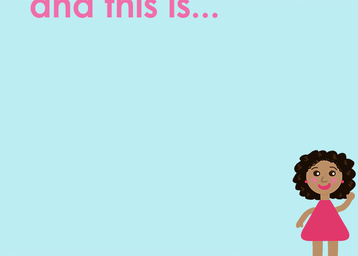

Grace Hopper 2016
If you are on this page, then I have applied for your scholarship to attend Grace Hopper 2016
As a computer science major at NYU, I am really interested in graphic design and web development and I decided to make a Grace Hopper animation. It was so much fun to make and I hope to build on it to hopefully present at Grace Hopper this year. Check it out below!
Thank you for stopping by and I hope you have a nice day!
Check out my personal website !